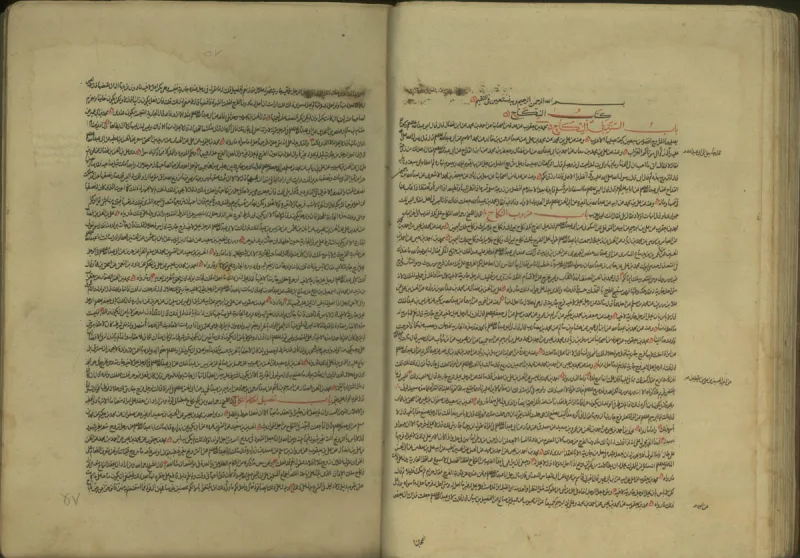
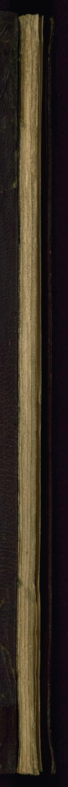

Muslim scholars have a real answer here. Say so before your friend does.
Taqiyya means hiding your faith under threat. Quran 16:106 excuses one who denies the faith under force.
Quran 3:28 allows care around hostile unbelievers. The word there is tuqah, the root of taqiyya.
It grew mainly in Shia law, in a group under attack.
Lying is allowed in three cases: war, making peace between people, and between husband and wife. That is Sahih Muslim 2605, where the three-case list comes through the narrator Ibn Shihab.
Jami at-Tirmidhi 1939 has it too. Muhammad said "war is deceit" (Sahih al-Bukhari 3030).
He also allowed false words in the killing of Ka'b ibn al-Ashraf (Sahih al-Bukhari 3031).
Many say Muslims are told to lie to us about their faith. That is not true.
The rule is about hiding faith under threat. It is not a free pass.
Sunni teaching treats lying as a grave sin outside those three cases.
IslamQA 27261 replies that this is a rule for survival. It is much like Peter's denial being forgiven.
The three cases cover peace-making that many would accept. "War is deceit" is battle craft, which every army uses.
And the base rule is truth: "truthfulness leads to righteousness" (Sahih al-Bukhari 6094). False witness is one of the worst sins.
No mainstream ruling tells a Muslim to lie to you.
Both halves matter. The narrow rule is real, and it differs from the call to truth unto death (Matthew 10:28; Revelation 2:10).
But the loud version poisons talk. Know the rule.
Never aim it at the person in front of you. To accuse a Sunni friend of it is unfair, unprovable, and ends the friendship.
"I know taqiyya is about persecution, not about lying to me. I am not going to use it that way."


They say it is a narrow rule for survival, and truth is the base rule.
IslamQA 27261 replies that this is a narrow rule for survival, not a way of life. It is much like Peter's denial being forgiven. The three cases cover the sort of peace-making many would accept. War is deceit describes battle craft, which every army uses.
And the base rule is truth: truthfulness leads to righteousness (Sahih al-Bukhari 6094). False witness is among the worst sins. The idea that Muslims lie to non-Muslims as a habit is, they note, a stereotype that no mainstream ruling supports.
Half true, half false: know the rule, and never aim it at a person.
Both halves of this entry matter. The facts are real. Deceit is allowed in set cases — war, force, peace-making, spouses — in sahih sources. That differs from the call to truth unto death.
But the loud claim, that you cannot trust a word a Muslim says, has no basis in Islamic law. It poisons every conversation. The rule is simple. Know the doctrine. Never aim it at the person in front of you. To accuse an ordinary Sunni of it is unfair, unprovable, and ends the talk on the spot.